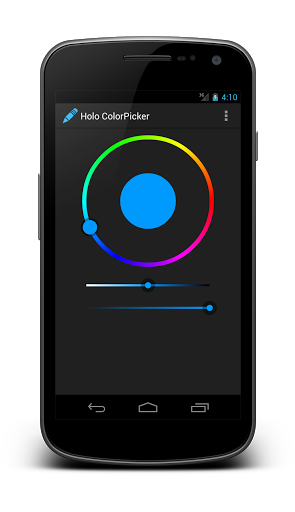

Android Stammtisch Berlin, April 2013
<com.larswerkman.colorpicker.ColorPicker
android:id="@+id/color_picker"
android:layout_width="wrap_content"
android:layout_height="wrap_content"/>
<com.larswerkman.colorpicker.SVBar
android:id="@+id/svbar"
android:layout_width="wrap_content"
android:layout_height="wrap_content"/>
<com.larswerkman.colorpicker.OpacityBar
android:id="@+id/opacitybar"
android:layout_width="wrap_content"
android:layout_height="wrap_content"/>
ColorPicker picker = (ColorPicker) findViewById(R.id.color_picker);
SVBar svBar = (SVBar) findViewById(R.id.svbar);
OpacityBar opacityBar = (OpacityBar) findViewById(R.id.opacitybar);
// Link Saturation and Opacity bar to the color picker view
picker.addSVBar(svBar);
picker.addOpacityBar(opacityBar);
// Set a previously selected color
picker.setOldCenterColor(savedColor);
// Get notified when the user changes the color
picker.setOnColorChangedListener(...);
// Get color
int newColor = picker.getColor();
<SomeContainer
xmlns:app="http://schemas.android.com/apk/res-auto"
...>
<com.larswerkman.colorpicker.ColorPicker
android:id="@+id/color_picker"
android:layout_width="wrap_content"
android:layout_height="wrap_content"
app:color_wheel_radius="124dp"
app:color_wheel_thickness="8dp"
app:color_center_radius="54dp"
app:color_center_halo_radius="60dp"
app:color_pointer_radius="14dp"
app:color_pointer_halo_radius="18dp"/>
| Library name: | HoloColorPicker |
|---|---|
| Description: | A customizable Holo-themed color picker |
| Author: | Lars Werkman |
| Source: | https://github.com/LarsWerkman/HoloColorPicker |
| License: | Apache License, Version 2.0 |
| Android versions: | API 8+ |
| Features: |
|